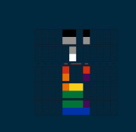

<!--sidebar-->
<c-sidebar #sidebar="cSidebar" class="d-print-none sidebar sidebar-fixed" id="sidebar" visible>
  <ng-scrollbar pointerEventsMethod="scrollbar">
    <c-sidebar-nav [navItems]="navItems" dropdownMode="close" />
    <div id="images" >
      
      <div style="display: flex; align-items: center;">
        
        <i class="fas fa-heart"></i>
        <div id="square">
          <strong>Square One</strong>
          <span style="color: grey;">Coldplay</span>
        </div>
      </div>
    </div>
  </ng-scrollbar>
</c-sidebar>


<!--main-->
<div class="wrapper d-flex flex-column min-vh-100  dark:bg-transparent"
  style="background-color: #191414; border: #191414;">
  <!--app-header-->
  <app-default-header class="mb-4 d-print-none header header-sticky" position="sticky" sidebarId="sidebar"
    style="background-color: #191414;" />
  <!--app-body-->
  <div class="body flex-grow-1 px-3" style="background-color: #191414;">
    <c-container breakpoint="lg" class="h-auto">
      <router-outlet />
    </c-container>
  </div>
  <!--app footer-->
  <app-default-footer style="background-color: #191414; " />
</div>
